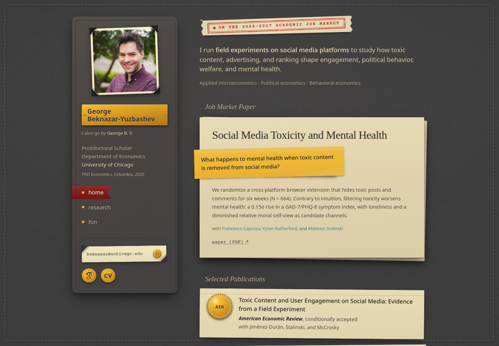
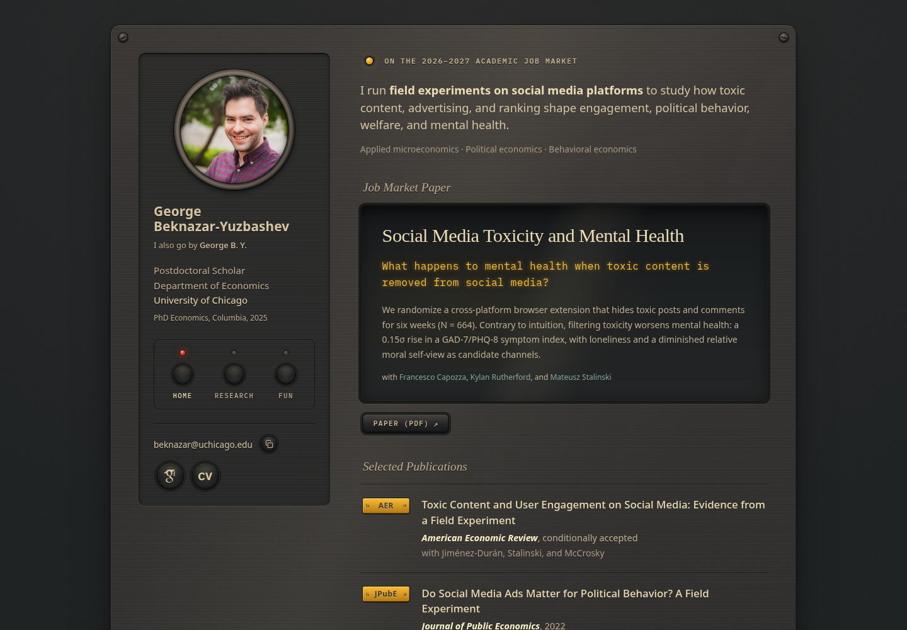
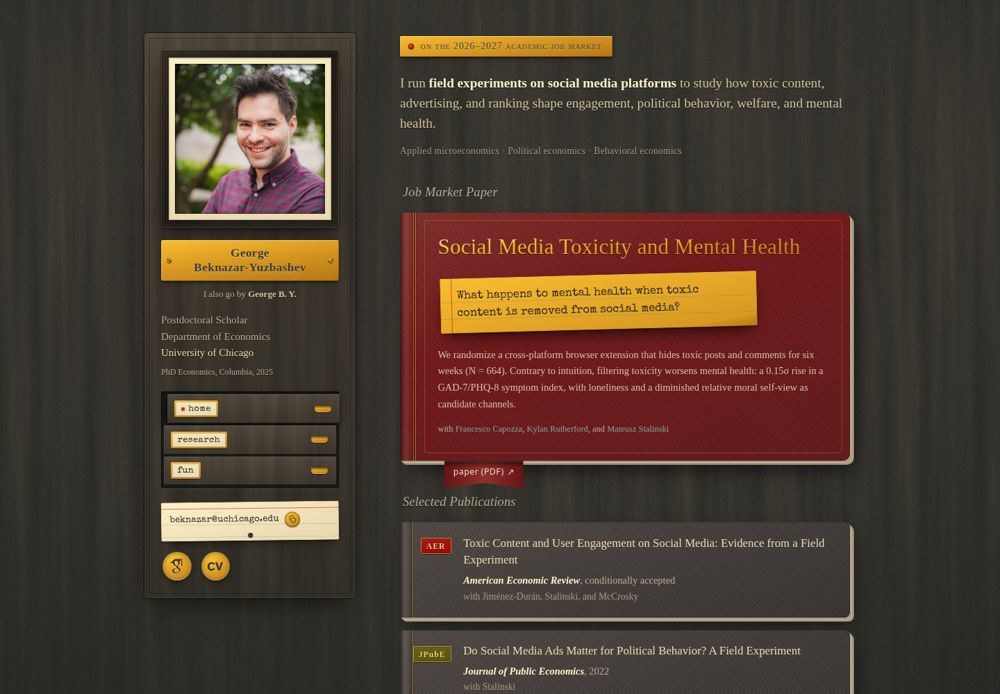
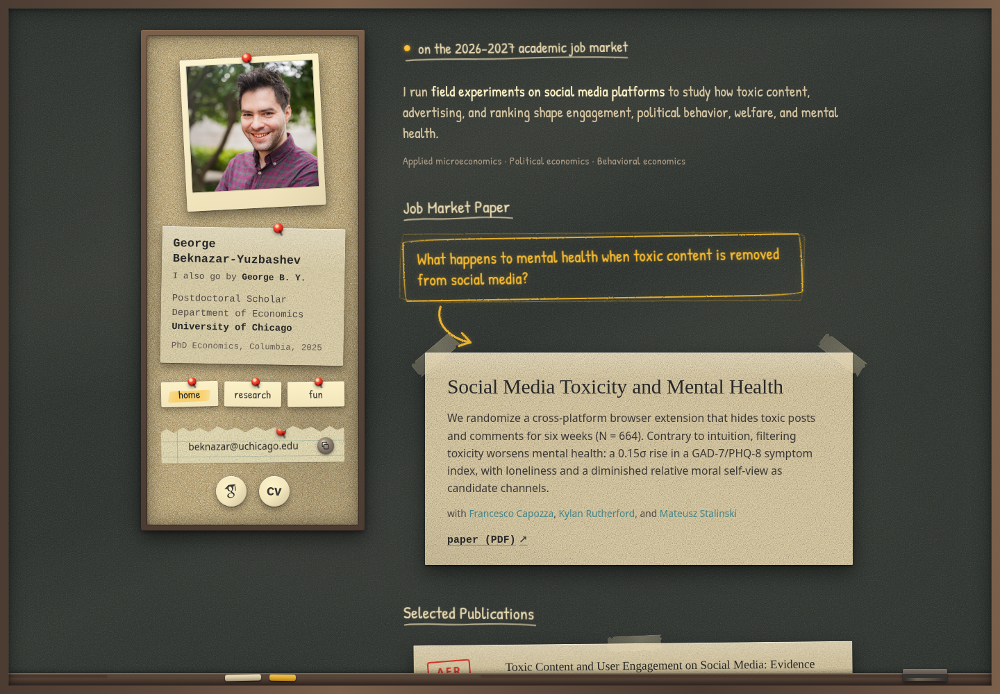

Four readings of the homepage in skeuomorphism, all drawn from the Gruvbox palette. Where the neumorphic studies shape one grey material with light alone, these borrow objects from a desk, an instrument panel, a library, and a seminar room. Each keeps the same content and reading order as 01c · Soft split, ported, the compact sidebar, the live behaviours (copy key, click-to-enlarge photo, the word lift), and the two fixed signals: the job market question is the loudest object on every page, and the AER and JPubE placements are immediately visible.
Every texture is CSS or inline SVG; no image files beyond the headshot. Screenshots are 1440 wide; open a study to see hover states, the phone layout, and the full page.

01Desk
leather · paper · brass · ink
A writing desk. The page is a dark leather blotter with a stitched border and a lamp-lit centre. The sidebar is a leather portfolio: the photo is a paper print held by four photo corners, the name is an engraved brass nameplate, the role is debossed into the leather, the nav is three riveted labels with the current page on a muted red ribbon, and the email sits on a cream business card tucked into two leather slots, with brass buttons for the copy key, Scholar, and the CV. On the blotter, the job market line is a red rubber stamp. The job market paper is a cream sheet lying on a second one, and the question is a yellow sticky note overhanging its edge, the loudest object on the page. The publications are two index cards, each with a serrated gold foil seal for the venue.
Choose this for: the most literal and the most legible reading: the dense text sits as dark ink on cream paper, and the sticky note is the most recognisable version of “the question is the hook”. It is also the only study that puts large light surfaces on the dark page. The typewriter face (Courier Prime, from Google Fonts) is the one outside dependency.

02Instrument
brushed metal · glass · lamps · brass
A warm piece of old laboratory equipment. The whole page is one brushed gunmetal faceplate with slotted screws in its corners. The photo sits in a turned bezel, the name and labels are engraved into the metal, and the nav is a bank of bakelite push buttons with an LED above each; the current page’s LED is lit. The job market line is an amber indicator lamp beside an engraved label. The job market paper is a recessed glass display, and the question is its amber readout, the brightest light on the panel; the paper link is a physical key beneath the window. AER and JPubE are engraved brass nameplates with tiny screws, and the publications are rows between engraved lines.
Choose this for: the most precise and technical reading. Everything is a control or a display, the signals are literal lights, and it stays entirely dark. The readout font (IBM Plex Mono, from Google Fonts) is the one outside dependency.

03Reading room
walnut · cloth · gilt · brass · card stock
A library. The page is dark walnut panelling. The photo hangs in a wooden frame with a cream mat over an engraved brass nameplate; the nav is a small card-catalogue cabinet whose three drawers carry typed labels in brass holders, the current drawer standing proud with a red ink dot; the email is a ruled library card with a brass stud for the copy key, and Scholar and the CV are brass medallions. The job market line is an engraved brass strip. The job market paper is a claret clothbound book seen from above, its title stamped in gilt, with the question on a yellow typewritten call slip lying across the cover and a red ribbon bookmark as the paper link. The publications are two dark cloth books on a wooden shelf, their venues gilt-stamped on red and green spine labels.
Choose this for: the most classical reading, and the richest set of objects. It is also the one with the most red on the page: the cloth colour is a single variable, so a brown or green binding is a one-line change if the claret feels sharp. The typewriter face on the cards (Special Elite, from Google Fonts) is the one outside dependency.

04Seminar room
slate · chalk · cork · paper · tape
An economics seminar room. The page is a chalkboard in a wooden frame, dusted and half-erased, with a chalk tray along the bottom at desktop. The sidebar is a cork strip: a pinned polaroid, a typed name tag, three paper tags for the nav (the current one highlighted in yellow marker), a torn notebook strip for the email, and two round stickers for Scholar and the CV. Headings, the job market line, and “all research” are written in chalk with wobbly underlines. The question is written in yellow chalk inside a hand-drawn box with an arrow down to the job market paper, a cream reprint taped to the board. The publications are two taped slips stamped in red ink with the venue.
Choose this for: the warmest and most personal reading, and the one that says “economist” on sight. The chalk hand (Patrick Hand, from Google Fonts) is the one outside dependency; the dense text stays on paper in ordinary type, so charm never costs legibility.